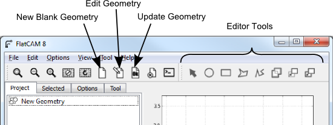

Geometry Editor¶
Introduction¶
The Geometry Editor is a drawing CAD that allows you to edit FlatCAM Geometry Objects or create new ones from scratch. This provides the ultimate flexibility by letting you specify precisely and arbitrarily what you want your CNC router to do.
Creating New Geometry Objects¶
To create a blank Geometry Object, simply click on the menu item Edit→New Geometry Object or click the New Blank Geometry button on the toolbar. A Geometry object with the name “New Geometry” will be added to your project list.
See also
FlatCAM Shell command new_geometry
Editing Existing Geometry Objects¶
To edit a Geometry Object, select it from the project list and click on the menu item Edit→Edit Geometry or on the Edit Geometry toolbar button.
This will make a copy of the selected object in the editor and the editor toolbar buttons will become active.
Changes made to the geometry in the editor will not affect the Geometry Object until the Edit->Update Geometry button or Update Geometry toolbar button is clicked. This replaces the geometry in the currently selected Geometry Object (which can be different from which the editor copied its contents originally) with the geometry in the editor.
Selecting Shapes¶
When the Selection Tool is active in the toolbar (Hit Esc), clicking on the plot will select the nearest shape. If one shape is inside the other, you might need to move the outer one to get to the inner one. This behavior might be improved in the future.
Holding the Control key while clicking will add the nearest shape to the set of selected objects.
Creating Shapes¶
The shape creation tools in the editor are:
- Circle
- Arc
- Rectangle
- Polygon
- Path
After clicking on the respective toolbar button, follow the instructions on the status bar.
Shapes that do not require a fixed number of clicks to complete, like polygons and paths, are complete by hitting the Space key.
Certain shape tools can have different options or modes. By hitting o and/or p the tool will cycle through its options and/or modes.
See also
The FlatCAM Shell commands add_circle, add_poly and add_rect, create shapes directly on a given Geometry Object.
Union¶
Clicking on the Union tool after selecting two or more shapes will create a union. For closed shapes, their union is a polygon covering the area that all the selected shapes encompassed. Unions of disjoint shapes can still be created and is equivalent to grouping shapes.

See also
The FlatCAM Shell command geo_union executes a union of all geometry in a Geometry object.
Moving and Copying¶
The Move and Copy tools work on selected objects. As soon as the tool is selected (On the toolbar or the m and c keys) the reference point is set at the mouse pointer location. Clicking on the plot sets the target location and finalizes the operation. An outline of the shapes is shown while moving the mouse.
See also
The FlatCAM Shell command offset will move (offset) all the geometry in a Geometry Object. This can also be done in the Selected panel for selected FlatCAM object.
Cancelling an operation¶
Hitting the Esc key cancels whatever tool/operation is active and selects the Selection Tool.
Deleting selected shapes¶
Selections are deleted by hitting the - sign key.